| Eclipse Corner Article |

Summary
Generating source code can save you time in your projects and can reduce the amount of tedious redundant programming. Generating source code can be powerful, but the program that writes the code can quickly become very complex and hard to understand. One way to reduce complexity and increase readability is to use templates.
The Eclipse Modeling Framework (EMF) project contains two very powerful tools for generating source code: JET (Java Emitter Templates) and JMerge (Java Merge). With JET you can use a JSP-like syntax (actually a subset of the JSP syntax) that makes it easy to write templates that express the code you want to generate. JET is a generic template engine that can be used to generate SQL, XML, Java source code and other output from templates. It is located in the org.eclipse.emf.codegen plug-in as part of the EMF runtime download.
In this article you will learn how to create JET templates, how to use the JET Nature and JET Builder to automatically translate templates into Java classes, and how to use these classes to generate source code. This article also provides a short reference to the JET syntax.
Contributed by Remko Popma, Azzurri Ltd., remko.popma at azzurri dot jp, July 30, 2003. Used with permission. Last update: January 3rd, 2007.
Getting Started
The JET Model
Directives
JET Scripting Elements
Resources
Before creating our first template, you'll need the EMF plug-in. If you haven't installed it yet, install it now before continuing with this tutorial.
The screenshots are based on version 3.1.0 RC2 of the Eclipse SDK and version 2.1.0 I200506160200 of EMF. The minimum requirement to use Java 5.0 constructs, such as Generics, is Eclipse 3.3M4 and EMF 2.3.0M4, though.
A JET template is a text file with a file name that ends with "jet". I will follow the EMF convention of appending "jet" to whatever the file extension of the generated code would be, so .javajet implies that the template generates a .java file, .xmljet templates generate XML, templates that generate SQL have the .sqljet extension, and so on.
Let's follow tradition and start with a template that creates the message "Hello, world". We will create our first template using the following four step process:
From the workbench menu, select File > New > Project to bring up the New Project wizard. Create a new Java project and add a source folder to it named src.
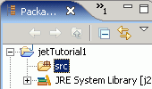
After creating the project, right-click on it in the Package Explorer or Hierarchy view and select New > Other... > Java Emitter Templates > Convert Projects to JET Projects.
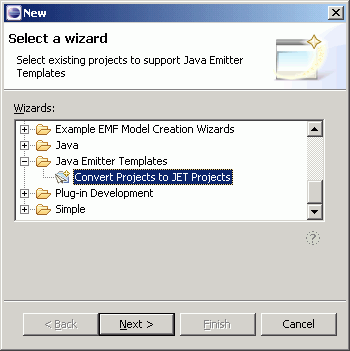
After pressing the Next button, select the project you've created and click Finish.

The wizard adds the JET Nature to the project creating a templates folder under the project root as shown in the image below. Also, a JET Builder is added to the project that will automatically translate every file in the templates folder with a file name ending in "jet" to a Java class.
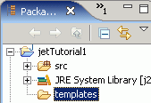
Before creating our first template, let's make sure that the src source folder of the project is the destination folder of the translated templates. Right-click on the project and select "Properties" from the pop-up menu. In the Project Properties dialog, select JET Settings on the left-hand menu and enter "src" (the name of your source folder) in the "Source Container" text field. The image below shows the JET Settings properties page of the Project Properties dialog.
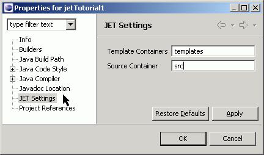
 Note: you can specify
multiple folders in the Template Containers field, separated by a space or a
semicolon. However, if templates in different folders have the same filename,
only the template in the first folder will be translated automatically by the
JET Builder. If you want all templates to be translated, make sure they have
different file names.
Note: you can specify
multiple folders in the Template Containers field, separated by a space or a
semicolon. However, if templates in different folders have the same filename,
only the template in the first folder will be translated automatically by the
JET Builder. If you want all templates to be translated, make sure they have
different file names.
The JET builder will now translate all templates to Java source files in the src folder of the project.
First, to avoid build problems, turn off automatic builds. From the Project menu, uncheck "Build Automatically".
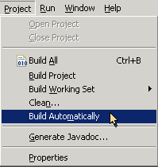
Now we create our first template. From the workbench menu, select File > New > File to bring up the New File wizard. Select the templates directory as the parent folder, and call the file helloworld.txtjet.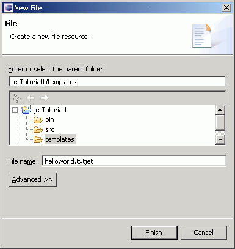
With "Build Automatically" disabled, you will not get the following error when you press the Finish button: "The 'jet' directive is missing in 'helloworld.txtjet' at line 1 column 1", as shown in the image below.
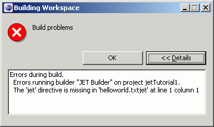
With automatic builds enabled, you will get the above error message. Fortunately, this does not mean that there is a real problem, just that the JET Builder tried to translate our template as soon as we created it, and discovered that it is still empty. Press OK to close the error dialog. Open the helloworld.txtjet file if it is not opened and type or cut-and-paste the following contents in the editor.
<%@ jet package="hello" class="HelloWorldTemplate" %>
Hello, world!
When you save the template file, it will automatically be translated by the JET Builder if you have 'Build Automatically' checked. If not, select "Build Project" from the Project menu.
Because we specified package hello and class HelloWorldTemplate in the first line of the template, the builder creates a hello package in the src folder and saves a Java file HelloWorldTemplate.java in this package, as shown in the image below.
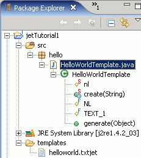
This Java class is the result of translating the template and is called a template implementation class. This class has a method called generate. This is the method that generates the code indicated in the template.
 We can create an instance
of the HelloWorldTemplate template implementation class and invoke
its generate method like this:
We can create an instance
of the HelloWorldTemplate template implementation class and invoke
its generate method like this:
To implement the above, create a new Class called HelloWorldImpl. Right-click on package hello in the Package Explorer or Hierarchy view and select New > Class.
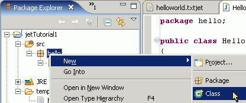
Name the class "HelloWorldImpl" and ensure that the public static void main(String[] args) stub is checked.

Now copy the following code into the main() method:
HelloWorldTemplate helloworld = new HelloWorldTemplate(); String result = helloworld.generate(null); System.out.println(result);
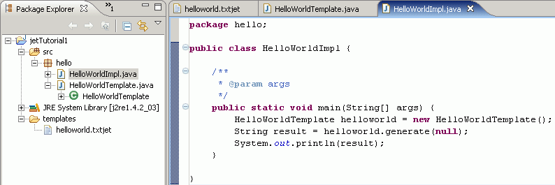
To run it, select "Run As/Java Application" from the "Run" toolbar drop-down. You should see the words "Hello, world!" printed to the console.
To recap, we just created our first template and generated some code with it. The result may not have been very impressive, but now we are all set up and we can start to explore what JET can do for you. The next step is to pass an argument to the template.
 Add a new JET template file
or change the existing one to the following content:
Add a new JET template file
or change the existing one to the following content:
<%@ jet package="hello" class="GreetingTemplate" %> Hello, <%=argument%>!
The JET Builder will translate this template to a class GreetingTemplate in the hello package. Again we create an instance of this template class (or change the existing HelloWorldImpl), but this time we pass a string argument to the generate method:
GreetingTemplate sayHello = new GreetingTemplate();
String result = sayHello.generate("Tutorial Reader");
System.out.println(result);
The code above will print the words "Hello, Tutorial Reader!" to the console.
The argument you pass to a template can be any object. In the previous example
we passed a string as the argument to the generate method, but in your application
you probably want to pass in your own model object. If the argument is not in
the java.lang package, or if your template uses any other classes not
in the java.lang package, you need to import these classes in the template
jet directive. A jet directive with an  imports
attribute looks like this:
imports
attribute looks like this:
<%@ jet package="hello"imports="java.util.*" class="ImportDemoTemplate" %>
The JET Syntax Reference section of this article gives more details on the jet directive and its attributes.
In the next example we will create a template that generates XML code. To stick to the EMF convention of appending "jet" to whatever the file extension of the generated code would be, we will save this template to a file called importdemo.xmljet. Note that we pass the template a java.util.List object that contains the data to use when generating the XML.
<%@ jet package="hello"<% List<?> elementList = (List<?>) argument; %> <?xml version="1.0" encoding="UTF-8"?> <demo> <% for (Iterator<?> i = elementList.iterator(); i.hasNext(); ) { %> <element><%=i.next().toString()%></element> <% } %> </demo>
The code below shows how to invoke the template instance. We create a  list
and
list
and  pass it to the generate
method of the template implementation class:
pass it to the generate
method of the template implementation class:
package hello;
import java.util.ArrayList;
public class XMLDemoImpl {
public static void main(String[] args) {
List<String> data = new ArrayList<String>();
data.add("first");
data.add("second");
data.add("third");
XMLDemoTemplate generateXml = new XMLDemoTemplate();
String result = generateXml.generate( data);
System.out.println(result);
}
}
data);
System.out.println(result);
}
}
This prints the following XML result to the console:
<?xml version="1.0" encoding="UTF-8"?> <demo> <element>first</element> <element>second</element> <element>third</element> </demo>
This is a very simple example that creates very simple XML. Of course you can use JET to create more complex XML, using attributes and namespaces. When you do this, you may find it more convenient to create a special class that is a better model of an XML document than a java.util.ArrayList. Generally, the more complex your JET template becomes, the more logic you will want to push into the model object that you pass to the template, to keep your templates readable. We will explore this further in Part 2 of this tutorial.
A neat feature of JET is that you can change the tags that mark scriptlets in the template file. This is very convenient when the syntax of the code you generate is very similar to the default JET syntax, for example if you use JET to generate JSP pages.
In the next example we will use JET to generate a simple JSP page. We will change the JET tags to use the "<$" character sequence to start a template tag, and "$>" to end a template tag. The template still contains "<%" and "%>" strings, but the JET engine will not see them as special anymore, and they will be written to the result like any other character sequence.
 To change the tag markers,
add a
To change the tag markers,
add a  startTag and
an
startTag and
an  endTag attribute
to the JET directive on the first line of the template, like in the example
below.
endTag attribute
to the JET directive on the first line of the template, like in the example
below.
<%@ jet package="tags.demo" class="JspTemplate"
Again, we invoke this implementation class with a string argument, like below:
System.out.println(new tags.demo.JspTemplate().generate("button"));
The following output will appear on the console. Note that the output contains
the intact JSP tag: the "<%" and "%>" character strings
are not interpreted as a JET scriptlet, but are simply inserted in the generated
code.
In the previous section we have looked at creating JET templates, how to set up the JET Nature to automatically translate templates into Java implementation classes, and how to use these Java implementation classes to generate code.
In this section we will take a closer look at the Java implementation classes that are the result of translating a template. We will see why we can use the implicit objects argument and stringBuffer in a template, and also look at customizing the translated implementation class by providing a custom "skeleton".
A JET template is translated to a Java implementation class. There are some objects in the Java implementation class that can be referenced directly in the JET template. The following example demonstrates how the implicit objects argument and stringBuffer can be used in a template.
<%@ jet package="hello" class="TranslationDemoTemplate" %>
The template above is translated to a Java implementation class like below:
package hello;
public class TranslationDemoTemplate
{
protected static String nl;
public static synchronized TranslationDemoTemplate create(String lineSeparator)
{
nl = lineSeparator;
TranslationDemoTemplate result = new TranslationDemoTemplate();
nl = null;
return result;
}
protected final String NL = nl == null ? (System.getProperties().getProperty("line.separator")) : nl;
protected final String TEXT_1 = "Hello, ";
protected final String TEXT_2 = "!";
public String generate(Object argument)
{
StringBuffer stringBuffer = new StringBuffer();
stringBuffer.append(TEXT_1);
stringBuffer.append(argument);
stringBuffer.append(TEXT_2);
stringBuffer.append("Hello again!");
return stringBuffer.toString();
}
}
Notice that the generate method of the Java implementation class
takes an Object parameter called argument. This is the same
object as the  argument
in the second line of the template. Also, notice how the Java implementation
class uses a StringBuffer object to collect the resulting generated
code. This object can be
argument
in the second line of the template. Also, notice how the Java implementation
class uses a StringBuffer object to collect the resulting generated
code. This object can be  referenced
directly in the template by its name stringBuffer.
referenced
directly in the template by its name stringBuffer.
The static method  create
allows an application to instantiate a TranslationDemoTemplate that uses a specific string as
line separator.
create
allows an application to instantiate a TranslationDemoTemplate that uses a specific string as
line separator.
The generate method of the TranslationDemoTemplate class above is said to be part of the implementation class "skeleton". The default skeleton used by the JET engine looks like this:
public class CLASS
{
public String generate(Object argument)
{
return "";
}
}
The skeleton definition looks almost like a normal Java class, except for the class name. The class name (CLASS) will be replaced by the value of the class attribute in the jet directive. Furthermore, the skeleton definition has the generate method that we have seen earlier. By changing the skeleton you can customize a template implementation class, for example make it implement an interface, or change any other feature of the class.
 For example, suppose you
want all your template implementation classes to implement an interface. The
interface could look something like this:
For example, suppose you
want all your template implementation classes to implement an interface. The
interface could look something like this:
public interface IGenerator {
String generate(Object argument);
}
We can tell the JET engine that we want to use a custom skeleton by setting the skeleton attribute of the jet directive on the first line of the template file. The value of the skeleton attribute is a URI that points to a file where the custom skeleton definition can be found.
To try this, first create a new Untitled Text File from the File > New menu or toolbar.
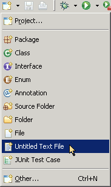
Open the type or cut-and-paste the following content in it:
public class CLASS
Now save this file as generator.skeleton in the templates directory, as in the image below.

This file is our custom skeleton. All templates that use this skeleton will be translated to classes that implement the IGenerator interface. To use this skeleton, add an attribute skeleton to the jet directive of your template, like this:
<%@ jet package="hello" class="GreetingTemplate" skeleton="generator.skeleton" %> Hello, <%=argument%>! The current time is <%=new java.util.Date()%>.
After the JET Builder translates the template, the implementation class looks like this:
package hello; public class GreetingTemplate
Note that the translated template now  implements
the IGenerator interface, and the
implements
the IGenerator interface, and the  generate
method now has
generate
method now has  the comments
we specified in the generator.skeleton file. This is one example of how
to customize a translated template with a skeleton definition. Skeleton definitions
can also contain extra methods, inner classes, etc. You'll need to experiment
a little to see what else is possible.
the comments
we specified in the generator.skeleton file. This is one example of how
to customize a translated template with a skeleton definition. Skeleton definitions
can also contain extra methods, inner classes, etc. You'll need to experiment
a little to see what else is possible.
If you have used JSP technology before, the JET syntax will probably look very familiar to you. The JET syntax is a subset of the JSP syntax, so there may not be much new here for you.
This section provides a semi-formal description and reference of the JET syntax.
A JET template is translated into a Java implementation class. This implementation class has a method that can be called to obtain a result string. This method is usually called generate (see also the skeleton attribute of the jet directive).
If no skeleton attribute is specified in the jet directive, the Java implementation class has the following implicit objects, which can be referenced in the JET template:
Directives are messages to the JET engine. Directives have this syntax:
<%@ directive { attr="value" }* %>
There may be optional white space after the "<%@" and before "%>".
Directives affect how a template is translated, but do not produce any output in the generated String when the template is invoked.
The jet directive defines a number of attributes and communicates these to the JET engine. A JET template file must contain a jet directive on the first line of the file, or the template file cannot be translated. Any subsequent jet directives are ignored. Unrecognized attributes result in fatal translation errors.
The following directive indicates that the template should be translated to a Java implementation class called HelloWorldTemplate.java in package hello. The implementation class should import the java.io.* and java.util.* packages.
<%@ jet package="hello" class="HelloWorldTemplate" imports="java.io.* java.util.*" %>
The details of the attributes for the jet directive are as follows:
| Attribute | Value |
|---|---|
| package | The package name of the Java implementation class that the template is translated to. If this attribute is not present, the Java implementation class is created in the default package. |
| class | The class name of the Java implementation class that the template is translated to. If not present, the Java implementation class is called CLASS. |
| imports | A space-separated list of packages and/or classes to import in the Java template class |
| startTag | The string in a JET template that signals the beginning of a scriptlet, expression, or include directive. The default is "<%". This attribute, and its cousin endTag can be very convenient when the syntax of the generated code is similar to the default JET syntax, for example if you use JET to generate JSP pages. |
| endTag | The string in a JET template that signals the end of a scriptlet, expression, or include directive. The default is "%>". See also startTag. |
| skeleton | The URI of a file with a skeleton definition of the Java implementation class that the template is translated to. This URI will be resolved similar to the way the file attribute value is resolved in an include directive. If no skeleton definition file is specified, the JET engine will use a default skeleton of the form "public class CLASS\n{\n public String generate(Object argument)\n {\n return \"\";\n }\n}\n". The class name in this skeleton class definition must be CLASS. |
| nlString | The newline string to use in the Java template class. The default is "System.getProperties().getProperty(\"line.separator\")" |
The include directive is used to substitute text and/or code at template translation-time. The <%@ include file="urlSpec" %> directive inserts the text of the specified resource into the jet template file. The included file may have JET scripting elements which will also be processed.
This directive has one single attribute, file. The value of this attribute is the URI of the location of the file to include. This URI can be either an absolute path or a relative path. Relative URIs are always interpreted as relative to the folder of the template that contains the include directive.
Example:
The following example requests the inclusion, at translation time, of a copyright file.
<%@ include file="copyright.jet" %>
 Note: JET supports the
notion of overriding template paths. It is possible to configure the JET engine
to use multiple Template Containers. In that case, the first container takes
precedence over the second, the second over the third, and so on. This means
that if template files or include files with the same file name exist in multiple
Template Containers, the file in the first folder will be used, and the other(s)
will be ignored. Clients of a JET-based application can use this mechanism to
provide custom include files that override the original include files without
modifying the templates of the original application.
Note: JET supports the
notion of overriding template paths. It is possible to configure the JET engine
to use multiple Template Containers. In that case, the first container takes
precedence over the second, the second over the third, and so on. This means
that if template files or include files with the same file name exist in multiple
Template Containers, the file in the first folder will be used, and the other(s)
will be ignored. Clients of a JET-based application can use this mechanism to
provide custom include files that override the original include files without
modifying the templates of the original application.
JET has two scripting language elements: scriptlets and expressions. A scriptlet is a statement fragment, and an expression is a complete Java expression.
Each scripting element has a "<%"-based syntax as follows:
<% this is a scriptlet %> <%= this is an expression %>
White space is optional after "<%", and "<%=", and before "%>".
If you want to use the %> character sequence as literal characters in a scriptlet, rather than to end the scriptlet, you can escape them by typing %\>. Similarly, the <% character sequence can be escaped by using <\%.
Scriptlets can contain any valid Java code fragment.
Scriptlets are executed at template invocation time. Whether or not they produce any output into the result String depends on the actual code in the scriptlet. Scriptlets can have side effects, modifying the objects visible in them.
When all scriptlet fragments in a given translation unit are combined in the order they appear in the JET template, they should yield a valid Java statement or sequence of statements.
Example:
<% if (Calendar.getInstance().get(Calendar.AM_PM) == Calendar.AM) {%>
Good Morning
<% } else { %>
Good Afternoon
<% } %>
<% scriptlet %>
A JET expression element is a Java expression that is evaluated and the result is appended to the StringBuffer object returned by the generate method. Expressions are evaluated at template invocation time.
If the result of the expression cannot be appended to a StringBuffer then a translation time error occurs. The content of a JET expression must be a complete Java expression.
Side-effects in expressions are supported. They take effect when the JET expression is evaluated. JET expressions are evaluated left-to-right in the JET template.
In the next example, the current date is appended to the StringBuffer result.
<%= (new java.util.Date()).toLocaleString() %>
<%= expression %>
http://www.javaworld.com/javaworld/jw-11-2001/jw-1102-codegen.html